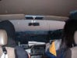

2002.12.21佐賀GEILS
EXTREAM ANTHEM Vol.13
出演：JURASSIC JADE・retrO spection・ABLAZE・CHOKE・NECRONOMICON
・VIO SYSTEM DIVIDE
2002.12.22福岡KEATH FLACK
GENOCIDE AGEIN
出演：JURASSIC JADE・NECRONOMICON・CHOKE・VIO SYSTEM DIVIDE・HYDROPHOBIA・UTOPIA
●ＪＵＲＡＳＳＩＣ ＪＡＤＥ’Ｓ setlists
ドク・ユメ・スペルマ
G.D.G
くたばりやがれ
Ｐｌａｓｔｉｃ Ｗａｔｅｒ Ｍｏｔｈｅｒ
新曲2
新曲3
新曲5（Fighet For What？）
新曲4
メドレー（Ａｆｔｅｒ Ｋｉｌｌｉｎｇ Ｍａｍ～D-DAY～CHAOSE QUEEN～ドクロ独白～誰かが殺した日々～僕らの狂気）
鏡よ鏡
～アンコール～
ドク・ユメ・スペルマ
●ALBUM of TOUR
| 2002.12.20 | 2002.12.21 | 2002.12.22 | 2002.12.23 | 2002.12.24 |
 |
●BBS comment
こんばんは 投稿者：VIO SYSTEM DIVIDE 投稿日：12月 9日(月)21時13分49秒
こんにちは。九州ツアー楽しみにしています。
2日間変態エロビームをくらわしますよ～。
寒いです、言ってもしかたないけど・・・。 投稿者：NOB－JURASSIC JADE 投稿日：12月11日(水)21時02分23秒
＞jjcrew 様
九州よろしくお願いします。故郷に錦ですか？
＞VIO SYSTEM DIVIDE 様
助松君！君の変態エロビームを２日間も浴び続けたら、俺の人格が崩壊する。勘弁してくれ。
九州への旅はとても楽しみだが、それだけが気がかりだ。
音源発売おめでとう。面白い曲いっぱいありそうだね。
やっと来れました！ 投稿者：ぐっ血@CHOKE 投稿日：12月12日(木)00時48分50秒
携帯だけでここに入りこむのは苦労しました…12/21と22の佐賀と福岡でご一緒させて頂くCHOKEのぐっ血といいます！この度は九州の方まで足を運んでいただいて光栄です！当日はよろしくお願いします！楽しみにしています！
あとうちのページにリンクを貼らせてもらっても良いですか？
出たかったなぁ。 投稿者：NOB－JURASSIC JADE 投稿日：12月14日(土)21時30分28秒
やってるんでしょうね・・・B.F.2002・・・。
＞ぐっ血@CHOKE 様
ようこそ、山口君。ぐっ血ってどんな血？
こちらからはとっくにリンク貼ってま～す。よろしくお願いします。
21・22日楽しみです。（当日船で○○港？に着く予定です。）
B.F.2002かぁ… 投稿者：jjcrew 投稿日：12月16日(月)23時25分08秒
裏方としては、一度でいいからあれぐらいデカイ舞台で、モニターのセットリスト貼りをしてみたいもんだ。
さて、来週末はいよいよ俺の故郷、九州へ上陸だ！しかも佐賀→博多の２days!!!JURASSIC JADEとしては「誰かが殺した日々」レコ発以来、実に11年ぶりの九州公演（ですよね、NOBさん？）。俺も気合入れて望みますんで、集え・九州の同胞達よ!!!
いよいよ迫ってきました＾＾ 投稿者：やま＠ＡＢＬＡＺＥ 投稿日：12月18日(水)05時12分59秒
九州上陸までもうすぐですね＾＾
21日はヨロシクお願いしますヽ(^▽^＠)ノ
佐賀でお待ちしています☆☆☆
明日20日には出発だ。 投稿者：NOB－JURASSIC JADE 投稿日：12月19日(木)01時12分33秒
年末的あわただしさと、これから九州へ旅立つのが共鳴して、なんだか落ち着きません。
良い旅と演奏したいものです。
という訳で、JURASIC JADEは21日佐賀ガイルス・22日福岡キースフラックにお邪魔します。
CHOKEさん・NECRONOMICONさんのお陰です。感謝！
おいそれとは行けない距離感です。是非お見逃しないように！！
お待ちしてます。
＞jjcrew 様
そうでした。あの時は運転できる人間が俺だけでした。ひたすら運転し続けました。
今回はGEORGEもいますし、フェリーという裏ワザも使います。
「故郷に錦」で俺たちに力を貸してください。
＞やま＠ＡＢＬＡＺＥ 様
あっという間でしたね。とても楽しみにしてます。
お互い頑張りましょう！
行ってきまぁーす!!! 投稿者：NOB－JURASSIC JADE 投稿日：12月19日(木)23時50分31秒
じゃあ行ってきます！！
出かけている間もBBSのチェックしますので、書き込みお願いします。
それからメールも転送サービス受けているので、どんどんください。
(無題) 投稿者：レトロスペクション 投稿日：12月20日(金)01時27分14秒
はじめまして！レトロスペクションのヴォーカルのりょうたです。なかなか、ホムペが見つからなくてパソコンで見つかりました。あさっては対バンよろしくお願いします！まだまだ1年生バンドなんで、先輩バンドさんたちとライブができてうれしいです。ジャンルが実は僕たちだけ違うんですけどお互い頑張りましょう！
長旅 投稿者：おさる 投稿日：12月20日(金)08時39分50秒
ですねぇ。お気をつけて。
旅画像を楽しみにしてます。
朝方… 投稿者：やま＠ＡＢＬＡＺＥ 投稿日：12月22日(日)03時58分29秒
佐賀でのLIVEお疲れ様です☆ヽ(^▽^＠)ノ
初めて拝見しましたが想像以上でした！凄いかっこよかったです！
是非ともまた佐賀にお越しください♪
それとジュラシックジェイドさんのドラムを叩けた事が幸せです(〃⌒―⌒)/
これからもよろしくお願いしまっす
PS
もし宜しければ相互リンクを是非したいのですが宜しかったでしょうか･･！？
二日間 投稿者：ぐっち@CHOKE 投稿日：12月23日(月)05時08分03秒
ありがとうございました！そしてお疲れさまでした！とても楽しい二日間でしたね。次は東京でお会いできたらいいですね！それと、T-シャツありがとうございました！また九州来て下さい！
福岡組です。 投稿者：B，L＠“J” 投稿日：12月23日(月)11時04分27秒
JJのLIVEは初参戦でしたが，非常に高い演奏力に加えてHIZUMIさんの圧倒的なカリスマ性に終始釘付けとなりました。短い時間でしたが本当に良いものを見せてもらいました。また福岡にお越し下さい。
はじめまして 投稿者：イット 投稿日：12月24日(火)00時41分40秒
メンバーのみなさん、先日の福岡ライブお疲れさまでした。（当日は急いでいたため、挨拶もそこそこで申し訳ないです）
何ひとつ情報のないままライブを観させていただいたのですが、とっても楽しかったです。
（正直言うと、ステージに上がられるまで、何方がメンバーなのかすら知りませんでした。スミマセン）
あまり『メタル』というジャンルについて明るくない私ですが、自分好みのリフや変拍子があり、とても耳に心地好かったです。HIZUMIさんの声には、予想外の『音』が出てきたのでビックリしました！スゴイ『音』です。
（そう言えば、常連のお客さんたち、新曲でもノリノリでしたよね。変拍子なのに、みなさんリズム感いいですね！！）
しかも、イントロの「ぬいぐるみのポリフォニー」やＮＯＢさんの「フレイム・バイ・フレイム」など、初心者の私でも楽しめるよう（マニアック？）な要素がいっぱいあって、とにかく驚きの連続でした。やられましたよ。
次回、九州に来られる際には、予習もバッチリの状態で楽しみたいです。
それでは、また。
初カキコですm(__)m 投稿者：あさみ 投稿日：12月24日(火)02時39分07秒
佐賀＆福岡でのLIVEお疲れ様でした(^-^)佐賀でのLIVE一番前でみさせていただきましたm(__)mすごい迫力でした(^-^)ｶﾞﾝｶﾞﾝﾉﾘﾉﾘでいけて楽しすぎでした(^-^)何もありませんが(盛り上がるくらいしかありません(;_;))また佐賀に来てください(>_<)待ってますo(^o^)o
ただいま!!!遠かった・・・。 投稿者：NOB－JURASSIC JADE 投稿日：12月24日(火)17時07分49秒
さっき東京に帰ってきました。（九州は遠かった・・・。）
濃厚な２日を含む５日間でした。
「祭りのあと」という感じで、東京への帰り道（夜の海を渡り、夜も明けぬうちに高速道路をひた走って・・・）なんだか淋しくなってしまいました。（笑）
近々写真など込みのライブレポします。お楽しみに。
＞おさる 様
無事帰ってきました。頑張って写真撮って来ました。
＞やま＠ＡＢＬＡＺＥ 様
お疲れ様でした。
ご一緒出来て嬉しかった。また、お逢いしましょう。
リンク早急にやります。
＞ぐっち@CHOKE 様
まずは、顔覚えてなくてごめん。
そして、誘ってくれて本当にありがとう。
俺達のライブ中も素晴らしく応援してくれて、ありがたかった。
東京でお待ちしてます。
＞B，L＠“J” 様
喜んで頂いて嬉しいです。感想も勇気付けられます。ありがとう！
＞イット 様
声掛けてくれて嬉しかった。
熊本から来てくれたんだよね。九州の地図が頭になかったからピンときてなかったけど、遠くからありがとう。
そして、丁寧に感想書き込みしてくれてとても嬉しい!!
次いつになるか分からないけど、よろしく。
＞あさみ 様
書き込みありがとう。嬉しいです。
打上げでHAYA（Dr)の前に座っていたお二人のどちらかですね？
また、行きたいですね・・・佐賀、とても遠いけど・・・。
お疲れさまでした 投稿者：SKEMAZ@VIO SYSTEM DIVIDE 投稿日：12月24日(火)19時31分34秒
2日間、本当にお疲れさまでした。
いや～っ楽しかったです。
すごいライブが2日も体験できたし、いろいろなお話も聞けましたし。
打ち上げでは一方的に爆発してしまいまして申し訳ございませんでした。
秘伝の"ビニ本"すごそうですね～!!!ぐふふふぅぅぅ
貴重な時間、そして楽しい一時、本当にありがとうございました。
またご一緒できたら幸いです。
それでは
ＰＳ：キャビネットありがとうございました。アルバム聴いてくださって光栄です。
HAYA？ 投稿者：あさみ 投稿日：12月24日(火)19時50分50秒
NOBさん＞CHOKEのドラムですか？一番はしっこに座ってた高校三年18歳のほうでありますm(__)mわかりましたか？
早速貼りました＾＾ 投稿者：やま＠ABLAZE 投稿日：12月24日(火)20時49分56秒
＞NOBさん
こちらのLINK完了致しました。お暇があればご確認ください(〃￣∇￣)ノ彡
キャッチフレーズっすか？;;;;(； ・・)ゞえ～っと、では
｢佐賀メロディックデスメタル｣でお願いします★
九州、お疲れ様でした！ 投稿者：亜II死@necronomicon 投稿日：12月26日(木)00時06分11秒
無事に帰郷されたようで、良かったです。
非常に楽しい2日間、有難うございました！
個人的に印象に残っているのが、福岡での登場の仕方！あれは素晴らしい！客席からそのまま登場というのを逆手にとってプラスにされたあのアイデアは本当に良かったです。素直に世界に入っていく事ができました。またぜひご一緒させて下さいね！
＞NOBさん
Tシャツ、有難うございました！早速次の日に着ました！
それと、ツアーの帰りってなんか寂しい気持ちになるの、わかります。ぼくも。
おつかれさまでした！ 投稿者：いしい@CHOKE（Vo/Ba） 投稿日：12月26日(木)22時24分33秒
佐賀、福岡とおつかれさまでした＆ありがとうございました！九州はいかがでしたでしょうか？たぶんあの二日間で一番はしゃいでたのは自分だろうと思えるほど暴れてました。首が筋肉痛であります！佐賀でJURASSIC JADE見れたらなーと思っていたのが実現するなんて！感謝感激雨あられであります！またご一緒にできる日を願っております。
BACK TO